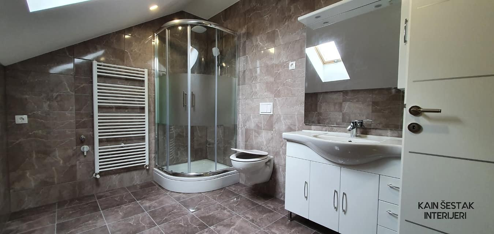

Pri projektu adaptacije i uređenja potkrovlja prije svega treba utvrditi prostorne mogućnosti – visinu prostora, upotrebnu površinu, mogućnosti da se ispod kosine ostvare dodatni nivoi i slično. Izuzetno je bitno i sagledati krovnu konstrukciju, te kako ona oblikuje i utječe na iskoristivost prostora, mogućnost otvaranja prozora i dr.
Često se kod tavana u stambenim zgradama arhitekti i izvođači radova susreću sa oblikom krovnih nosača koji nije prilagođen korisnom prostoru jer taj prostor prvotno nije ni bio namijenjen korištenju.
Zbog toga oblik ovih nosača, njihov raspored i položaj u prostoru u mnogome definiraju i mogućnosti njegovog korištenja.
Općenito se u projektima uređenja i adaptacija potkrovlja predviđaju i koriste lagani građevinski materijali. Na taj način se ne ugrožava konstrukcijska stabilnost zgrade, a drveni elementi i površine prostoru daju toplinu i šarm.

Zbog potrebe praćenja zahtjevnih kontura zidova (kosine, dimnjaci, grede i ostale fizičke karakteristike tavanskih prostora koje mogu predstavljati prepreku), prilikom izrade troškovnika treba voditi računa o stavci izrade pojedinih komada namještaja po mjeri.
Iako su se u tavanskim prostorima donedavno najčešće koristile drvene podne obloge, danas se sve češće koriste i druga rješenja, poput lijevanih podova ili keramičkih pločica.
Time se i u ovaj tip interijera unosi dašak suvremenosti, a ako je riječ o podovima svijetlih tonova, prostor će se vizualno povećati, naročito ako su zidovi i stropovi također u nekoj nijansi bijele boje.